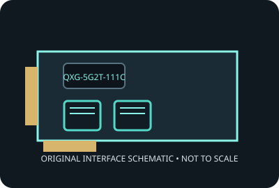

[ MODEL-SPECIFIC NETWORK HARDWARE ]
QNAP QXG-5G2T-111C Dual-Port 5GbE Adapter
Dual-port NBASE-T copper adapter for supported NAS, workstation and server platforms. Record applies to the exact SKU named here; verify the physical label and revision.

IDENTIFICATION: Product label: QXG-5G2T-111C. Link rates are nominal negotiated signaling rates, not measured throughput.
Specifications and OS compatibility
| Catalog subcategory | Ethernet adapters |
|---|---|
| Exact product SKU | QXG-5G2T-111C |
| Controller | Marvell AQtion AQC113C Ethernet controller implementation; verify the board marking and exact revision. |
| Bus, lane and port interface | PCI Express Gen 3.0 x4; two RJ-45 copper ports. |
| Ports and media | 2 port(s); 5GBASE-T interface. |
| Nominal line rate (not measured) | Each port negotiates up to 5 Gb/s and supports lower 2.5, 1 Gb/s and 100 Mb/s rates; maximum aggregate nominal line rate is 10 Gb/s. |
| Operating systems and drivers | QNAP lists supported QTS/QuTS hero, Windows and Linux versions. Use QNAP’s model-specific driver/download and NAS qualification notes; kernel driver availability varies. |
| Compatibility notes | Requires an x4 PCIe electrical link and supported QNAP host. Cat 5e or better cabling and a 5G-capable peer are required for 5GbE; each port can negotiate down to a shared lower rate. |
| Measured throughput | No physical specimen benchmark is claimed. A meaningful result must identify host, peer, link partner, media, driver/firmware, traffic pattern, test tool and duration. |
Model and revision notes
Requires an x4 PCIe electrical link and supported QNAP host. Cat 5e or better cabling and a 5G-capable peer are required for 5GbE; each port can negotiate down to a shared lower rate.
Confirm exact card revision, device ID, transceiver/cable type, host firmware, bracket and driver build before installation. Use vendor qualification data for server/NAS deployment.
Preservation and measurement notes
Record card revision, controller marking and driver/firmware versions. Power down before installation; handle by edges and store in ESD shielding.
No measured throughput is represented by the nominal line rate. Record peer, media, negotiated rate, traffic pattern, test tool and duration for any future benchmark.
Manufacturer sources and documentation
- QNAP QXG-5G2T-111C product pageManufacturer model information.
- QNAP QXG-5G2T-111C hardware specificationsExact model port, interface and compatibility specifications.
Manufacturer documentation takes precedence for exact SKU, board revision and platform qualification; controller-family data alone does not establish card compatibility.